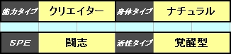

|
③活性タイプと身体タイプを決定する。 一定の暴走率に達した時に活性化が起こります。 その活性化がどのタイプになるかを選択して下さい。 またＳＦらしく身体タイプを選択しましょう。 選択した身体タイプによってロールプレイが変わる事もあるでしょう。 身体タイプにはそれぞれ１pのパラメーターボーナスがあります。 ※エクセルシートでは以下の様に選択 ※身体タイプを選択する事でエクセルシートでは補正ポイントを自動計算します。 
※ＡＩだけの存在、電子生命体は存在しますが、ロールプレイの困難さからプレイヤーとしては選択不可とします。 又、機械化されているタイプは能力ではなく、 それに相当する科学兵器、兵装、装備を内蔵・搭載しているという設定にしてもＯＫです。 | ||||||||||||||||||||||||||||||||||||||